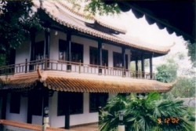

| II. NHỮNG NGÔI CHÙA Ở HUẾ 1. Chùa T ăng QuangChùa Tăng Quang, tên tiếng Pàli: Sangharànsyaràma; dân địa phương thường gọi là "chùa Áo Vàng", địa chỉ hiện nay là 1/1 đường Nguyễn Chí Thanh, phường Phú Hiệp, Thành phố Huế. Tại vùng này, ngày xưa có một địa điểm gọi là "Hồ Ông Mười" mà ngày nay được cải tạo thành trường PTTH Gia Hội. Năm 1954, Hoà thượng Giới Nghiêm, ông Nguyễn Thiện Ðông và bà Nguyễn thị Cúc là những người chủ trương xây dựng.
Năm 1959, chùa được xây dựng lại với mô hình kiến trúc tân kỳ, không giống như hình thức lúc ban đầu - chỉ là hình thức cải gia vi tự, tạm thời có địa điểm để chư Tăng cư ngụ hành đạo và hoằng pháp. Ngày khánh thành có sự chứng minh của Hoà thượng Hộ Tông, Hoà thượng Bửu Chơn, Hoà thượng Thiện Luật cùng với hơn 60 vị tỳ kheo từ miền Nam ra tham dự. Năm 1963, Ðại đức Giới Hỷ cùng với Phật tử chùa Tăng Quang thực hiện chương trình đại trùng tu Tăng Quang tự, bao gồm ngôi chánh điện và toà bảo tháp. Các cơ sở đó tồn tại cho đến ngày hôm nay. Kiến trúc chùa trong thời kỳ đầu (1954) không có gì đặc biệt vì đó chỉ là một ngôi nhà lá đơn sơ với vài ba liêu thất để chư Tăng hành đạo. Sang thời kỳ thứ nhì (1959), chùa được xây dựng và kiết giới Sìmà theo truyền thống của Phật giáo Nguyên Thủy. Chánh điện thờ Phật tuy không lớn nhưng đường nét kiến trúc hoàn toàn khác biệt với những ngôi chùa ở xứ Huế ngày đó. Lối kiến trúc này mô phỏng theo kiến trúc của Campuchia và Thái Lan - vì đức Giới Nghiêm từng tu học tại hai quốc gia này nên có lẽ ảnh hưởng sự chỉ đạo của Ngài. Và có thể do thiếu tài liệu tham khảo và chưa quen với mô típ kiến trúc và họa tiết trang trí chùa tháp của Thái - Miên nên những người thợ xây đựng thời ấy chưa thể hiện được nghệ thuật độc đáo, tinh xảo của mô típ kiến trúc này. Thời kỳ thứ ba (1963) là thời kỳ xây dựng Tăng Quang tự tương đối hoàn chỉnh; và hiện trạng ấy gần như tồn tại cho đến ngày hôm nay. Các công trình xây dựng trong chùa gồm: chánh điện, bảo tháp, Tăng xá, nhà khách, trai đường và linh đường. Chánh điện và bảo tháp được kiến tạo chung một địa điểm. Chánh điện ở tầng trệt, bảo tháp được xây ở trên và nằm về phía mặt tiền của chánh điện. Trong chánh điện tôn thờ tượng Phật Thích Ca, là nơi chư Tăng và Phật tử hành lễ hằng ngày. Bảo tháp dùng để tôn trí ngọc Xá lợi của Ðức Phật. Từ bên ngoài nhìn vào chánh điện, khách thập phương sẽ nhận ra vẻ tôn nghiêm, thanh tịnh và trầm hùng - phần nào là nhờ vào dáng dấp uy nghi vời vợi của ngôi bảo tháp. Bảo tháp hình vuông có 6 tầng mái, nổi bật trên nền trời với biểu tượng đoá sen xoè cánh trên đỉnh. Mặt tiền của tầng tháp đắp nổi dòng chữ SANGHARANSYARÀMA (Tăng Quang Tự) theo hình bán nguyệt. Phía dưới dòng chữ là phù điêu Ðức Phật ngồi thiền định, bên trái khỉ chúa dâng quả, bên phải có bạch tượng quỳ hầu. Mảng phù điêu này thể hiện câu chuyện Ðức Phật khuyên dạy các thầy Tỳ kheo ở thành Kosambi không được nên Ngài lặng lẽ vào rừng nhập hạ mà không có một vị Tỳ kheo nào theo hầu cả. Trong thời gian nhập hạ ở núi rừng chỉ có khỉ và voi là thị giả Ngài mà thôi. Dưới hình Ðức Phật có dòng chữ: Theravàda (Phật giáo Nguyên Thủy) nằm ngay trên chánh môn của Phật điện. Trong chánh điện chỉ tôn thờ duy nhất kim thân Phật Thích Ca; có một pháp toạ để pháp sư giảng pháp và hai tủ Tam Tạng Thánh điển Pàli tiếng Thái. Phía trái chánh điện là Tăng xá hai tầng mới được xây dựng lại vào năm 2000 - 2001, khi dãy nhà cũ dùng làm Tăng xá bị hư hỏng nghiêm trọng sau trận lũ 1999.Sau lưng Tăng xá là nhà khách; trai đường ở sau chánh điện; linh đường nằm ở bên phải. Ngoại trừ chính điện, các công trình còn lại xây cất bình thường để đáp ứng nhu cầu sử dụng. Cho đến nay chùa đã trải qua những đời trụ trì: Hoà thượng Giới Nghiêm. 2. Chùa Thiền Lâm Chùa Thiền Lâm được thành lập năm 1960 bởi Hoà thượng Hộ Nhẫn. Thoạt kỳ thủy vào năm 1958, Giáo hội đề cử Ngài từ Tam Bảo về trụ trì chùa Tăng Quang; nhưng sau một thời gian ngắn Ngài nhận thấy hạnh độc cư thiền định, đầu đà Tam y Nhất bát nuôi mạng bằng khất thực không thích hợp ở đây, nên vào năm 1960 Ngài xin phép Giáo hội rời chùa Tăng Quang đến thôn Thượng II, xã Thuỷ Xuân, dựng một liêu thất nhỏ ở ngọn đồi gần nhà máy nước Quảng Tế để tu hành. Thời đó người ta gọi Ngài là "ông sư chùa Cốc". Nay chùa toạ lạc tại thôn Thượng II, xã Thuỷ Xuân, Thành phố Huế. Năm 1966, nhờ đức độ tu hành của Ngài khiến một số đông Phật tử khởi tín tâm cúng dường nên tháp thờ Xá lợi Phật và chính điện (ở tầng dưới) được kiến tạo. Ðến viếng chùa Thiền Lâm, trước khi vào khuôn viên chùa, tại ngã ba dưới chân đồi Quảng Tế (vị trí nhà máy nước Quảng Tế) khách thập phương sẽ trông thấy một pho tượng "Thế Tôn khất thực" cao khoảng 8 mét, rất uy nghiêm và từ ái. Bảo tượng này gợi nhớ lại hình bóng Thế Tôn cách đây hơn 25 thế kỷ - một đời Thế Tôn trì bình khất thực để nuôi mạng và hoá độ chúng sinh. Tấm gương sáng của Ðấng Ðại Giác từ thuở xa xưa ấy được Hoà thượng Hộ Nhẫn hành trì từ khi mới xuất gia cho đến lúc viên tịch! Ðáng mừng thay là sau khi Ngài ra đi, chư Tăng đệ tử Ngài tại Thiền Lâm vẫn đang tiếp tục kế thừa pháp hạnh thanh cao này. Từ tượng trì bình tới khuôn viên chùa khách thập phương phải vượt qua khoảng đường 300 mét về phía trái đồi Quảng Tế. Trên đường vào khuôn viên chùa du khách sẽ nhìn thấy bảo tượng Thế Tôn Niết Bàn nằm ở phía bên trái. Bảo tượng này được tôn trí trên nền đàn bê tông ba cấp, dài khoảng hơn 7 mét, ẩn hiện giữa rừng thông và dương liễu. Dáng nằm và gương mặt của bảo tượng thể hiện được vẻ an lạc giải thoát của Ðức Thế Tôn. Chính từ hai tôn tượng này mà đồng bào Phật tử và cư dân ở Huế gọi chùa Thiền Lâm là "chùa Phật đứng - Phật nằm". Vào trước khuôn viên chùa, ngay dưới chân đồi, phía bên trái, xuất hiện trước mặt du khách là bảo tượng Ðức Phật toạ thiền, quay mặt về hướng Ðông. Tượng và toà sen cao 5,2 mét, tôn trí trên bảo đài 3 tầng cao 9 mét. Vào đến chùa, tận cùng khuôn viên ở bên trái là ngôi bảo tháp màu trắng cao vút, uy nghi mà thanh thoát giữa nền trời. Bảo tháp có 2 phần: Tầng dưới là chánh điện; tầng trên tôn trí Xá lợi Phật Thích Ca và chư Thánh Tăng. Bố cục tháp phía dưới hình tròn cắt cạnh trước và sau. Phần sau nối thêm hậu điện để thờ Phật và chỗ chư Tăng hành lễ (được xây nối thêm vào năm 1973 - 1974). Phía trên tháp có dáng hình chuông úp với đỉnh nhọn, được trang trí bằng một số phù điêu, hoa văn giản dị. Dáng dấp bảo tháp được mô phỏng theo kiểu chùa Sirimagalà ở Myanmar - nơi Hoà thượng Hộ Nhẫn thọ đại giới nhưng đơn giản hơn nhiều. Tổng chiều cao khoảng 15m. Trong nội điện, tầng dưới tôn thờ tượng Ðức Phật Thích Ca cao 1,6m trên bảo toạ cao hơn 2m. Chung quanh tường chánh điện trưng bày một số tranh vẽ về cuộc đời Ðức Phật Thích Ca và một số chuyện tiền thân. Một đại hồng chung nặng cỡ 7 tạ đặt ở tay trái. Cách bảo tháp khoảng 10m về hướng đông là cổng tam quan không mái có biển đắp nổi dòng chữ: SAMÀDHIVARAVIHÀRA và tên chùa bằng tiếng Việt: Thiền Lâm tự. Ngay sau lưng chánh điện là thiền thất của Hoà thượng và phòng khách (nay làm nơi thờ phụng y bát, di ảnh Hoà thượng). Tiếp đó là một dãy Tăng xá nhỏ được xây cất, chắp nối thêm từ năm 1965 tới 1994. Một dãy Tăng xá mới được xây dựng vào năm 1998 - 1999 nằm về hướng Tây. Trai đường và cũng là linh đường nằm giáp góc của hai dãy Tăng xá. Ðiểm thu hút khách thập phương và Phật tử các giới là nơi đây có phong cảnh u tịch, thoáng mát, nhiều cây cao bóng cả, là môi trường sinh thái rất tốt. Ở đây, không khí trong lành, tĩnh lặng rất phù hợp cho những bậc chân tu dừng chân để hành đạo và xiển dương Giáo pháp. Du khách đến đây tham quan, viếng chùa lễ Phật được hưởng không khí an lành, có thể quên đi những tháng ngày mệt nhọc và phiền não. Sau khi Hoà thượng Hộ Nhẫn viên tịch, người đứng ra đảm nhiệm công việc giám tự hiện nay và trụ trì tương lai là Thượng tọa Hộ Tịnh. Ngôi Tam Bảo này mới chỉ có một đời trụ trì là Hoà thượng Hộ Nhẫn. Ngoài ra, dưới chân đồi Phật Niết Bàn về phía đông còn có một tịnh thất tu nữ (tịnh thất Gotamì) gồm một chánh điện nhỏ, một dãy ni xá 5 phòng và 2 thiền thất xây cất đơn giản, là nơi hành đạo của các sư cô Nam Tông, đệ tử Hoà thượng Hộ Nhẫn. 3. Chùa Huyền Không Chùa Huyền Không hiện nay là hậu thân của chùa Huyền Không ở Lăng Cô, Phú Lộc, bên chân đèo Hải Vân được Thượng tọa Viên Minh, sư Tịnh Pháp, sư Trí Thâm và sư Tấn Căn xây dựng vào năm 1973. Do hoàn cảnh đổi thay, vào năm 1978, chùa Huyền Không được dời về thôn Nham Biều, Hương Hồ, Hương Trà, TP Huế và tồn tại cho đến ngày hôm nay. Diện tích chuà khoảng hơn 6000 m2. Ðây là ngôi chùa Phật giáo Nam Tông khá nổi tiếng ở cố đô Huế từ cuối thập niên 1980. Vào viếng chùa, khách thập phương phải qua cầu Bạch Yến. Chiếc cầu này chư Tăng Huyền Không xin tài trợ của Hiệp hội Schmitz - Tây Ðức xây dựng nên, để nhân dân địa phương và du khách đến chùa đi lại thuận tiện. Qua cầu, rẽ về trái khoảng 100m du khách sẽ thấy cổng chùa cao lớn, đắp nổi dòng đại tự CHÙA HUYỀN KHÔNG. Sân chùa lát gạch, rộng, thoáng mát. Nhìn vào chánh điện, lồ lộ một bức hoành phi sơn son thiếp vàng treo trên chánh môn, điêu khắc nổi hàng chữ Pàli: ABHISUNNÀTÀRÀMA. Chánh điện có diện tích 12m x 24m, cao khoảng 8 - 9 mét, lợp ngói măng âm - dương; đường nét mạnh mà không thô, trầm hùng và uy nghiêm. Hoạ tiết đơn giản mà cổ kính, tôn trí duy nhất một tượng Phật Thích Ca màu vỏ trứng sẫm, vẻ mặt thanh thoát và từ ái, tay phải đưa lên, tay trái đặt trên lòng bàn chân - với tư thế này Ðức Phật như đang đàm đạo cùng các đệ tử. Dáng dấp tượng có đường nét tương tự mô típ tượng của các xứ Phật giáo Nam Tông nhưng tính dân tộc và nhân bản được thể hiện rất cao. Bảo tượng cao 1,54m, đặt trên toà sen cao 1,5m. Một bảo lan bằng bê tông giả gỗ phân cách phần thờ phụng và lễ bái của Phật tử tạo nên một không gian trang nghiêm, tôn kính. Chánh điện trang trí đơn giản, thanh tịnh và trong sáng. Phật tử vào lễ Phật trong khung cảnh đó sẽ cảm thấy tâm hồn mình thảnh thơi, lắng dịu. Khi nghe lời kinh của chư Tăng lại càng hoan hỷ hơn, vì âm điệu kinh Pàli vang vọng nhẹ nhàng, trầm bổng ngân nga như tiếng sóng biển dội vào bờ từng đợt, từng đợt. Bên phải sân Phật điện là khu vườn cảnh bố cục tự nhiên có tên là Thanh Tâm viên: giữa những đồi cỏ lúp xúp có năm ba gốc dương liễu cổ kính, xương xẩu, tàn lá xanh rì, dăm bảy cụm lạc thạch là những lối mòn quanh co lát đá. Một mái lương đình ngói đỏ thấp thoáng sau mấy gốc hoa sứ lão trượng, cội thiên tuế tuổi tác gần thế kỷ, cặp thạch đăng xứ Phù Tang xa xôi biểu tượng thanh kiếm, chiếc khiên của một võ tướng Samurai qui phục cửa Thiền đang ngày đêm nghiêng mình soi bóng xuống mặt nước của Hàm Nguyệt Trì. Bên hông phải Phật điện là một kiến trúc thu hút sự chú ý của khách thập phương: Yên Hà Các. Vẻ đẹp của toà nhà này nằm ở các điểm: đường nét nhẹ nhàng, uyển chuyển; nhiều tầng mái; kết hợp nhuần nhuyễn hai loại vật liệu: bê tông và gỗ, mà đỉnh cao là các bộ cửa gỗ nhiều kiểu cách trang trí. Công trình này được xây dựng vào các năm 1999 - 2000, thay thế cho toà gác gỗ, mái tranh, vách nứa giàu tính nghệ thuật dân gian đã hư hỏng nhiều sau 15 năm tồn tại. Tầng trệt của toà nhà là phòng khách và phòng trụ trì; tầng trên dành tiếp khách Tăng lưu trú. Khu vườn cảnh Hứa Nhất Thiên nối tiếp Yên Hà Các là nơi trưng bày các chậu bonsai; cạnh đó là giàn phong lan với hơn 500 giò lan nhiều chủng loại. Nổi bật trên mặt hồ nhỏ giữa vườn là chiếc phù kiều sắc đá xám, nơi du khách thích dừng chân chụp ảnh lưu niệm. Bên trái Phật điện là nhà khách, tăng xá, nhà học... cũ kỹ, tạm bợ. Tương lai sẽ được xây dựng lại để đáp ứng nhu cầu ăn ở, sinh hoạt của Tăng chúng ngày càng đông và hoà hợp hơn với kiến trúc của chính điện và Yên Hà Các. Ðây cũng là Phật học viện của Phật giáo Nam Tông tại Thành phố Huế. Chùa đã trải qua những đời trụ trì: Thượng tọa Viên Minh (1973 -1975) 4. Huyền Không Sơn Thượng Huyền Không Sơn Thượng do Thượng tọa Giới Ðức thành lập năm 1989, toạ lac dưới chân núi Hòn Vượn ở vùng Chầm thuộc sơn phận xã Hương Hồ, giáp với xã Hương An. Phong cảnh chùa giàu chất thiên nhiên, nhiều vẻ đẹp hoang dã được chọn lọc nhờ bàn tay khéo léo con người. Thơ mộng và tịch liêu rất thích hợp với mẫu người của Thượng tọa Giới Ðức. Tại đây Thượng tọa đã cho ra đời rất nhiều bài thơ hay và những cuốn sách có giá trị về Phật học, văn chương, nghệ thuật. Phải chăng nhờ cảnh núi rừng hùng vĩ, môi trường thiên nhiên trong lành và mát mẻ đã góp phần hun đúc nên các tác phẩm bất hủ ấy? Ðến viếng chùa du khách phải vượt qua nhiều quãng đường lên đồi xuống dốc mà hai bên là cảnh núi rừng thiên nhiên, tiếng suối chảy rì rào, sim, mua, tràm, chổi,... ẩn hiện theo mùa, qua rừng tùng ngút ngàn, những cụm cổ thạch rêu phong, những bài thơ trên đá v.v...và Ở đây Thượng tọa đã kiến tạo được một chánh điện giản dị bằng gỗ, mái tranh trông rất hiền hoà và thanh thoát. Bên phải chánh điện với mấy cụm tre vàng thơ mộng là "Am mây tía" (tiền thân là Phong Trúc Am, được xây dựng từ năm 1992). Bên trái chánh điện là "Quá Thiện Ðường" (nhà ăn), "Chúng Hoà Ðường" (nhà sinh hoạt). Phía trước chánh điện khoảng hơn 100m, bên phải có hai dãy Tăng xá và nhà học là "Tuệ Học Ðường". Ở đây có một vườn ươm cây kiểng đủ loại kích cỡ 40m x 50m. Phía đối diện là vườn ươm lan rộng 20m x 30m, có khoảng trên dưới 1000 giò. Hướng Tây Nam có một mõm núi, có cây cổ thụ mọc cheo leo trên đá, tên là "Ðộc Thụ Sơn". Mấy dãy núi đối diện Thượng tọa trồng 5 - 6 vạn cây thông và đặt tên là "Vạn Tùng Sơn". Huyền Không Sơn Thượng toạ lạc trên một vùng rừng 56 ha do Nhà Nước giao đất, giao rừng từ năm 1989. Hiện tại ở đây có khoảng trên 20 vị sư và chúng điệu là Tăng sinh Phật học viện Huyền Không. 5. Chùa Ðịnh Quang Cách trung tâm thành phố Huế khoảng 8 km về phía Nam, toạ lạc tại thôn Giạ Lê, xã Thuỷ Phương, huyện Hương Thủy, tỉnh Thừa Thiên-Huế. Chùa do Hoà thượng Giới Nghiêm và các Phật tử trong chi hội Phật giáo Nguyên Thủy mua đất xây dựng vào năm 1962. Chánh điện là toà nhà xây dọc, kích thước 5,5m x 12m, nền cao gần 1m, xây bằng gạch ciment, lợp ngói. Trải qua gần 40 năm không được tu bổ nay đã hư hại nhiều. Nội điện chỉ thờ một bảo tượng Ðức Phật trên bệ thờ ba cấp như các ngôi chùa do đức Giới Nghiêm sáng lập. Trước đây chùa còn có một dãy Tăng xá 3 phòng và căn bếp nhỏ ở bên phải (từ ngoài nhìn vào) nhưng nay đã bị gỡ bỏ. Ðây là ngôi chùa từ khi thành lập tới gần đây không có trụ trì. Việc quản lý, phụng thờ do chi bộ Phật giáo Nguyên Thủy Giạ Lê đảm trách. Vào giữa năm 2002, do hầu hết các hội viên đã già nua, tuổi tác, lực bất tòng tâm nên các cụ đã làm đơn xin bàn giao cơ sở này cho đức Tăng trưởng Hộ Nhẫn và văn phòng Hệ phái. Văn phòng Hệ phái Nam Tông đã tiến hành thủ tục đăng ký tên chùa vào danh bộ chùa chiền của tỉnh giáo hội, trình các ban ngành chức năng của chính quyền. Sắp tới chư Tăng Nam Tông tại Huế sẽ đề cử nhân sự về quản lý ngôi Tam Bảo này. 6. Chùa Pháp Luân Toạ lạc tại số 29 Lê Quý Ðôn, thành phố Huế. Do Ðại đức Giới Hỷ, thay mặt đức Tăng thống Giới Nghiêm và Giáo hội Tăng già Nguyên Thủy Việt Nam cùng ông bà Nguyễn Thiện Ðông và Nguyễn thị Cúc quyên góp, cúng dường tịnh tài mua lại công thổ của chính quyền đương thời lập chùa vào năm 1967. Do tình hình cuộc chiến căng thẳng trong giai đoạn ấy nên chưa thể xây dựng quy mô, mà chỉ mới cất được một dãy nhà cấp 4, lợp tôle thờ Phật và để chư Tăng ở coi sóc vào năm 1974. Sau năm 1975 do chính sách đất đai thay đổi, diện tích đất chùa bị lấn chiếm nhưng nhà chùa không thể làm gì được. Mãi tới năm1994, sau khi luật đất đai được ban hành, chư Tăng Nam Tông tại Huế, dưới sự lãnh đạo của Hoà thượng Hộ Nhẫn đã gởi đơn kiến nghị các cấp chính quyền để đòi lại quyền quản lý, sở hữu. Mặt khác, kế hoạch phát triển, quy hoạch đô thị của thành phố cũng làm cho diện tích còn lại của chùa bị thu hẹp. Năm 2000, giáo hội đã có công văn bổ nhiệm Thượng tọa Tuệ Tâm làm trụ trì ngôi Tam Bảo này (trước đây chùa chưa có trụ trì). Thượng tọa dự định sẽ xây dựng chính điện và cơ sở khám chữa bệnh từ thiện tại đây trong các năm sắp tới. III. ÐÓNG GÓP CỦA PHẬT GIÁO NAM TÔNG Phật giáo Nam tông du nhập vào Việt Nam hơn nửa thế kỷ qua. Tuy có lúc mạnh lúc yếu nhưng tính thuần tuý và trong sáng thì chưa bị yếu tố thăng trầm xáo trộn. Nếu so sánh sự phát triển với Phật giáo Bắc tông thì sự phát triển của Phật giáo Nam tông tương đối còn khiêm tốn. Dù vậy, sự đóng góp của Phật giáo Nam tông đối với nền văn hoá và xã hội Việt Nam nói chung và ngôi nhà Giáo hội Phật giáo Việt Nam nói riêng có nhiều thành tựu đáng kể. 1. Nghi thức Tôn giáo gắn liền với nghi thức. Nghi thức Phật giáo Nam tông đơn giản nhưng không kém phần trang trọng và tôn nghiêm. Sở dĩ đơn giản là vì nghi thức Nam tông dựa vào truyền thống kinh điển Nguyên Thủy, gần gũi và trung thành với đời sống Ðức Phật lúc Ngài còn tại thế. Thông thường, trong nghi thức Phật giáo Nam tông không có chuông trống, lễ nhạc, ngân nga tán tụng. Khi Phật tử cúng dường, chư Tăng có đôi lời động viên, khích lệ Phật tử tu hành tinh tấn, trau dồi phước thiện, làm lành lánh dữ, lấy nhân quả làm gốc. Sau đó chư Tăng tụng kinh phúc chúc, và Phật tử hồi hướng phước báu. Ðạo Phật dựa trên nền tảng nhân quả, nghiệp báo, luân hồi cho nên nghi thức Nam tông thường được thực hiện để người sống trông thấy, nghe hiểu và thực hành Giáo lý từ bi và trí tuệ của đạo Phật, không giống như những tôn giáo khác, dựa vào nghi thức tôn giáo của mình để trưng bày, phô diễn hình thức, vừa nặng về tín ngưỡng vừa dễ pha trộn các màu sắc mê tín, dị đoan. Ðạo Phật Nam tông đến để mà thấy chứ không phải đến để mà tin. Do đó, nghi thức Nam tông không có cúng cô hồn, chẩn tế, xem ngày xấu, ngày tốt. Với một Phật tử Nam tông thuần thành thì ngày nào làm lành lánh dữ thì ngày đó là ngày tốt, bằng không thì ngược lại. Nghi thức Nam tông Việt Nam thường tụng kinh song ngữ Pàli - Việt. Ðây là một nghi thức đặc thù của truyền thống của Phật giáo Nam tông trên thế giới nói chung và của Việt Nam nói riêng. Ða số những khoá lễ chính: công phu sáng, chiều; cầu an; cầu siêu; trai tăng v.v... và đều cử hành thống nhất nhau, mặc dù khác quốc gia. Kinh điển Pàli, y phục tu sĩ, tuyên ngôn, kết giới Sìmà v.v... và của các nước Phật giáo Nam tông đều nhất quán. Ðược như vậy là vì quí Ngài y cứ theo Tam Tạng để tu hành, chứ không y cứ theo sự chế định của chư tổ. Nếu các Ngài căn cứ theo chư tổ thì Phật giáo Nam tông khó gìn giữ sự trong sáng và thống nhất cho đến ngày nay. Sự hiện diện của Phật giáo Nam tông tại Huế do vậy, về mặt nghi lễ, đã góp phần mới mẻ và phong phú thêm cho sinh hoạt tín ngưỡng của Phật giáo Việt Nam tại cố đô Huế. 2. Lễ hội Lễ hội Phật giáo Nam tông thường căn cứ trên kinh điển và lịch sử cuộc đời, lịch sử hoằng pháp của đức Tôn sư. Do đó, Phật giáo Nam tông có một số lễ hội không thấy có trong truyền thống Phật giáo Bắc tông. Tuy nhiên, điều đó không có gì mâu thuẫn, mà trái lại, làm phong phú thêm hình thức lễ hội của Phật giáo. Phật giáo Nam tông mỗi năm có bốn lễ hội chính vào các ngày: rằm tháng giêng, rằm tháng tư, rằm tháng sáu, và lễ hội Dâng y từ 16/9/ÂL - 15/10/ÂL. Rằm tháng giêng có hai ý nghĩa chính. Thứ nhất, kỷ niệm đại hội Thánh Tăng gồm có 1250 vị Alahán Ehi Bhikkhu, cùng tụ hội về Trúc Lâm tịnh xá, dưới sự chủ toạ của Ðức Phật. Thứ hai, để tưởng niệm vào năm Ðức Phật 80 tuổi, Ngài tuyên hứa và khẳng định với Ma vương trong ba tháng nữa Ngài sẽ lên đường tịch diệt. Rằm tháng tư là ngày đại lễ Tam Hợp (kỷ niệm ba sự kiện trong đời Ðức Phật xảy ra cùng một ngày, khác năm): Bồ tát đản sanh, Ðức Phật thành đạo và Ðức Phật Niết Bàn. Ngày xưa, trước thập niên 1950, Phật giáo Bắc tông xem ngày mồng tám tháng tư là ngày đản sanh của Ðức Phật Thích Ca, nhưng về sau, thống nhất với Phật giáo Thế giới và Phật giáo Nam tông ở Việt Nam, đã quyết định chọn ngày rằm là ngày khánh đản của Ðức Phật. Rằm tháng 6 có nhiều ý nghĩa như sau: Bồ tát giáng trần, Bồ tát xuất gia, Ðức Phật chuyển pháp luân, Ðức Phật dùng thần thông chinh phục ngoại đạo và lên cung trời Ðao Lợi thuyết tạng Vi Diệu Pháp để độ Phật mẫu. Ðồng thời, ngày này cũng là ngày khởi điểm mùa An cư kiết hạ của chư Tăng Nam tông. Rằm tháng 9 là ngày Tự tứ và sau đó là mùa lễ dâng y Kathina kéo dài một tháng theo truyền thống Phật giáo Nam tông. Các lễ hội rằm tháng giêng, tháng tư, tháng sáu được tổ chức cả ngày lẫn đêm. Ban ngày Phật tử đến cúng dường trai Tăng, hoặc chùa có tổ chức lễ đặt Bát hội. Vào ban đêm, Phật tử và chư Tăng phát nguyện thọ hạnh đầu đà, ngăn oai nghi nằm để cúng dường đức Bổn sư. Chương trình có nhiều tiết mục: thuyết pháp, luận đạo, hành thiền, chiêm bái Xá lợi v.v... và nhằm để chư Tăng và Phật tử ôn lại cuộc đời và đạo nghiệp của đức Bổn sư; và cũng để tự nhắc nhở với lòng mình không dễ duôi với Chánh pháp. Lễ hội Dâng y tổ chức theo từng chùa. Trong một tháng, từ ngày 16/9/ÂL - 15/10/ÂL mỗi chùa chọn một ngày thích hợp để tổ chức dâng y Kathina cúng dường y phục đến Tăng già. Tại cố đô Huế vào ngày rằm tháng 2 mỗi năm, chùa Huyền Không đều tổ chức lễ hội Huyền Không, quy tụ chư Tăng và Phật tử Phật giáo Nguyên Thủy rất đông. Lễ hội này biểu trưng tinh thần đoàn kết trong nội bộ Phật giáo Nam tông tại Huế. Lễ hội được tổ chức như vậy nhằm triển khai những kế hoạch Phật sự trong năm, đánh giá những ưu khuyết điểm trong công việc. 3. Xã hội Ðường hướng tu tập và hành hoá của Phật giáo Nam tông tại Việt Nam nói chung và tại Huế nói riêng trong gần nửa thế kỷ qua chú trọng gìn giữ giới luật, học giáo pháp theo Tam Tạng Pàli và hành thiền. Riêng Phật giáo Nam tông tại Huế, từ thập niên 80 đến nay đã đóng góp cho xã hội nhiều mặt tích cực và khả quan. điển hình như Thượng tọa Tuệ Tâm, từ các năm đầu của thập kỷ 80 của thế kỷ 20, đã cùng một nhóm Phật tử thành lập phòng thuốc Ðông y từ thiện, làm nền tảng cho Tuệ Tĩnh đường Diệu Ðế được xây dựng hơn 10 năm sau, đã phát thuốc, chẩn bệnh cứu giúp đông bào nghèo, người già yếu, bệnh hoạn ở địa phương và nhiều bệnh nhân trong và ngoài nước. Thường xuyên mở lớp đào tạo y sinh kế thừa, mở lớp dạy thể dục dưỡng sinh, tư vấn phòng bệnh AIDS. Thượng tọa Giới Ðức vào các năm 1989, 1990, 1991 đã vận động xây dựng được cây cầu Bạch Yến trị giá hơn 70 ngàn Mỹ kim để giúp cư dân địa phương đi lại không bị cách trở trong mùa mưa lũ. Sau cơn lũ lịch sử năm 1999 tại miền Trung, Thượng tọa Viên Minh, Giới Ðức, Pháp Tông, Tuệ Tâm đã nhiệt tình kêu gọi Phật tử trong và ngoài nước tổ chức cứu trợ kịp thời cho đồng bào gặp thiên tai và còn rất nhiều công tác xã hội, văn hoá khác nữa. Thượng tọa Giới Ðức, Pháp Tông và Tuệ Tâm đã kết hợp với nhau để làm những công tác từ thiện xã hội như đóng góp tiền tài để làm đường sá, cầu cống, xây dựng trường mẫu giáo, phát học bổng hằng quí cho con em nghèo hiếu học trong vùng. Khoản hỗ trợ này có năm lên đến 200 em. 4. V ăn hoáPhật giáo Nam tông du nhập vào cố đô Huế chưa được nửa thế kỷ nên ảnh hưởng văn hoá của Phật giáo Nam tông chưa lan toả rộng lớn trong cộng đồng quần chúng ở tỉnh Thừa Thiên - Huế - một vùng đất có truyền thống Phật giáo Bắc tông lâu đời; mặc dù vậy, xét trên bình diện giao thoa văn hoá, văn chương và văn học Phật giáo, có thể nói là đã khẳng định được vị trí vững chắc và có xu thế phát triển khả quan trong tương lai. Xin được dẫn chứng: Giáo lý Nam tông là Giáo Lý Nguyên Thủy; rất gần gũi và trung thành với lời Phật dạy. Có thể nói là chưa bị pha tạp như những bộ phái khác, nặng tính chất huyền bí, siêu hình và thiên về lý luận. Sự xuất hiện của Giáo lý Phật giáo Nam tông tại Huế rất cần thiết cho Tăng Ni và Phật tử các giới có thêm hiểu biết về hệ thống kinh điển Pàli mà từ trước đến nay ít được nghe biết đến. Ðóng góp này làm giàu thêm Ðại tạng kinh Việt Nam. Sự có mặt của Phật giáo Nam tông giới thiệu cho người dân Huế hình thức Tăng sĩ Tam y, Nhất bát có rất lâu đời trong truyền thống Phật giáo, được truyền từ thời Ðức Phật quá khứ cho đến Ðức Phật Thích Ca. Mà Phật giáo Bắc tông ở Việt Nam do ảnh hưởng Phật giáo Trung Hoa đã không còn bảo lưu đúng mức được. Hình ảnh y vàng, đầu trần chân đất ôm bát khất thực của chư Tăng Nam tông trên các nẻo đường từ thành thị tới thôn quê làm sống lại bóng hình Ðức Phật và chư Tăng hàng ngàn năm trước, và đã thổi một luồng sinh khí mới vào giới học Phật ở Huế, làm nảy sinh vô số hạt giống Bồ đề trong lòng người dân Huế. Phạn ngữ Pàli là một trong bốn thứ ngôn ngữ cổ chuyển tải kinh điển Phật giáo. Nghiên cứu Phật giáo mà không biết Phạn ngữ Pàli là một thiếu sót rất lớn đối với người học Phật hay nghiên cứu Phật giáo. Sự xuất hiện của Phật giáo Nam tông cùng với hệ kinh văn Pàli tất yếu sẽ lôi cuốn được giới nghiên cứu Phật học và các giới Phật tử có khuynh hướng tìm hiểu và học hỏi thêm về loại ngôn ngữ Phật học này. Ngoài ra, một số trước tác, biên soạn, sáng tác về kinh pháp hoặc văn, thơ của Thượng tọa Viên Minh, Thượng tọa Ðịnh Lực, Thượng tọa Giới Ðức đã đóng góp rất lớn vào tiếng nói của Phật giáo Nguyên Thủy cố đô Huế. Tiếng vang và trọng lượng của các tác phẩm này là điều có thể kiểm chứng được. Như vậy, về lãnh vực văn hoá, Phật giáo Nam tông cố đô Huế đã có chỗ đứng vững vàng, không chỉ trong cương giới đất thần kinh mà còn có lan ra cả nước. 5. Nghệ thuật kiến trúc Phật giáo Nam Tông du nhập vào Huế với số năm tương đối khiêm tốn. Do bị ảnh hưởng chính sách kỳ thị tôn giáo của gia đình Ngô triều, chiến tranh loạn lạc nhiều năm, kinh tế xã hội một thời trì trệ nên phát triển chậm. Các ngôi chùa tại Huế trải qua các giai đoạn lịch sử, xã hội của đất nước tất yếu cũng mang dấu ấn của thời đại; tuy vậy, tính đặc thù của mỗi chùa có thể nhìn thấy qua hình thức kiến trúc và nghệ thuật trang trí, bố cục không gian nội và ngoại điện. Bốn ngôi chùa sau đây thể hiện bốn mô thức kiến trúc khác nhau: a. Chùa Tăng Quang: Nếu lấy chính điện (điện thờ Phật) làm trung tâm khảo sát một ngôi chùa thì toà Phật điện tại Tăng Quang tự là một công trình thể hiện rõ nét mô típ chùa chiền Thái và Campuchia. Tuy nhiên, như phần trước đã có đề cập, có lẽ do chưa nắm bắt được kiểu dáng và hoạ tiết, hoa văn trang trí chùa tháp Thái - Campuchia nên những người thợ xây dựng nên toà Phật điện - bảo tháp này đã không phô bày được vẻ đẹp tinh tế, sắc sảo của loại hình kiến trúc này từ màu sắc tới đường nét. Ðiểm gây chú ý cho khách thập phương khi nhìn thấy công trình xây dựng này là độ cao của toà tháp, kiểu dáng và sắc vàng phủ trùm lên toàn bộ toà tháp và Phật điện. Có thể dễ dàng nhận ra đây là ngôi chùa Phật giáo Nam tông. b. Chùa Thiền Lâm: Nằm trên điểm cao nhất của một ngọn đồi, xung quanh là các triền dốc thấp nên toà Phật điện - bảo tháp Thiền Lâm nổi bật trên nền trời giữa một không gian xanh màu lá, mộ chí. Sắc trắng tinh khiết là màu chủ đạo của công trình xây dựng này. Toàn bộ Phật điện - bảo tháp này lấy mẫu từ chùa Primàgalà tại Rangoon, Myanmar thu nhỏ lại. Tuy nhiên, cũng do không nắm bắt được nghệ thuật trang trí, hoa văn, hoạ tiết của xứ chùa tháp nên những người thợ xây dựng chùa đã không thể hiện được nét đẹp cầu kỳ, tinh xảo, hài hoà của mô típ này. Vật liệu làm cửa và kiểu dáng cửa bộc lộ rõ khả năng tài chính eo hẹp và khả năng hạn chế của những người xây cất. Ðiểm tạo được sự chú ý của khách thập phương vẫn là tầm cao, kiểu dáng lạ so với các chùa Phật giáo Bắc tông c. Chùa Huyền Không: khác với hai ngôi chùa trên - đậm nét phong cách kiến trúc Thái - Campuchia - Myanmar. Phật điện và Yên Hà các của chùa Huyền Không là hai công trình phảng phất nét kiến trúc của Trung Quốc, Nhật, Hàn quốc và cung đình Huế. Sự khác biệt là ở bố cục, không gian nội điện và nghệ thuật xử lý vật liệu, trang trí. Các chùa, đền, miếu theo mô típ xây dựng của các nước nói trên và cung đình Huế thường bố cục toàn bộ khối nhà theo chiều ngang, mái tiếp mái; ở đây, tiền đường vẫn được đặt theo chiều ngang nhưng bái đường thờ Phật lại nằm dọc, với hành lang có mái vây quanh tạo thành một khối kiến trúc khép kín, thông thoáng. Nội điện bài trí đơn giản, trang nghiêm mà thanh thoát: ngay dưới toà sen Ðức Phật là bộ hương án lớn gồm 9 chiếc kỷ gỗ nhỏ theo mô típ hương án Thái nhưng không sơn son thếp vàng, được chạm trổ chấm phá mô thức dây lá cách điệu. Một bộ hương án nhỏ hơn đặt phía trước gian hành lễ của chư Tăng, tạo một khoảng cách vừa phải với phần bái đường của Phật tử. Tường vách nội điện sơn màu vỏ trứng, không treo hình ảnh trang trí như ở một số chùa Nam Tông khác. Tường phía ngoài màu lam nhạt tạo cho du khách cảm giác êm dịu, trầm lắng và làm nổi bật hai dãy cột tròn sắc nâu đậm, bóng lưỡng. Ngoại trừ các bộ cửa lớn nhỏ, xà gồ, rui, lách bằng gỗ thật, kỳ dư, kèo, cột, xuyên, xà của toàn bộ khối nhà là bê tông giả gỗ sắc cánh dán, tinh vi như gỗ thực. Mái đao, hai đầu nóc, quyết trang trí rồng và hồi văn cách điệu, nét mạnh, sắc. Cửa sổ gian thờ Phật và gian thờ linh bố trí bốn bức phù điêu đắp lộng biểu tượng tứ linh: long, lân, quy, phụng với hai game màu xanh lam, trắng và cặp rồng cách điệu mây giả đá là các điểm trang trí đậm nét văn hoá cung đình Huế. Nếu ý đồ kiến trúc một ngôi Phật điện nhằm thể hiện các ý tưởng: sử dụng vật liệu hiện đại (bê tông, cốt thép) nhưng khi thành hình lại mang dáng dấp cổ kính, hài hoà với đường nét kiến trúc chùa chiền của cố đô, mà lại không quá cầu kỳ, tỷ mẳn. Bố cục, bài trí, màu sắc trang nghiêm mà nhã đạm để phù hợp với tinh thần Phật học Nguyên Thủy ban sơ: trong sáng, tự nhiên, chưa nặng màu sắc tôn giáo, tín ngưỡng thì có thể nói toà Phật điện này là một thể nghiệm khá thành công theo đánh giá của nhiều nhà chuyên môn về kiến trúc và khách thập phương. d. Huyền Không sơn thượng: Tựa lưng vào chân núi có độ cao 309m (so với mực nước biển) ngút ngàn thông xanh, mặt hướng ra Ðộc Thụ sơn - như tấm bình phong của ngoại Minh đường, Phật điện Huyền Không sơn thượng toạ lạc tại vị trí gần như là trung tâm của sơn lũng này. Tả Thanh long có một triền đồi thoai thoải và chấm dứt bởi con đường xuất nhập sơn khẩu. Hữu Bạch hổ là một núi cao, liền khối với núi mẹ, um tùm cây rừng nguyên sinh đang phục hồi. Tính dân dã, nghệ sĩ và gần gũi thiên nhiên của Phật điện Huyền Không sơn thượng được nhận thấy rất rõ qua kiến trúc và cách bài trí nội điện, trang hoàng ngoại điện. Từ ngoài nhìn vào, nếu khách thập phương có chút kiến thức về các kiểu nhà dân gian ở Huế, Quảng Trị sẽ lập tức nhận ra ngay đây là kiểu nhà vuông (còn gọi là kiểu nhà bánh ú) được nới rộng hàng hiên. Toàn bộ cột kèo, tường vách, cửa đi, cửa sổ đều được làm bằng gỗ; mái lợp cỏ tranh. Do kết cấu căn bản của kiểu nhà này có nhiều cột nên có lẽ vì vậy mà người thiết kế đã khéo léo dùng kính ốp tất cả cửa đi, cửa sổ để tạo thông thoáng và thêm ánh sáng cho nội điện. Ngôi điện này có chiều dài khoảng 10m, chiều ngang cũng tương đương như vậy. Gian giữa nội điện tôn trí bảo tượng Ðức Phật bằng đá sa thạch lam cao 0,8m (kể cả toà sen). Dưới chân toà sen có thêm tượng Phật đồng Thái Lan. Lư hương, giá đèn đều bằng đá cẩm thạch, vân tử chu sa. Phía trên bảo tượng và hào quang thiết trí một kệ thờ Xá lợi Ðức Phật và chư Thánh Tăng. Trên vách của hai gian bên treo hai bức tự hoạ quốc ngữ khổ lớn, nét mạnh, sắc, tiêu sái - thủ bút của Thượng tọa Giới Ðức. Nền lát gạch đất nung màu mận chín già hoà hợp với màu gỗ cột, kèo, tường vách tạo nên một không gian ấm cúng, thân mật. Khiêm nhường về tầm vóc và bề thế so với Phật điện các chùa trên song điểm lôi cuốn du khách ở đây là vây quanh ngôi Phật điện bé nhỏ, đơn sơ này cả một không gian thiên nhiên xanh màu lá, sắc dáng hoa cỏ đủ loại, hương thơm phảng phất xa gần của nhiều thứ thảo mộc vô danh lẫn hữu danh. Những giò phong lan rực rỡ phất phơ trên đầu những chậu cây cảnh, cây thế quanh chái hiên. Những cội mai già, tùng, bách... thấp thoáng sau mấy cụm giả sơn rải rác đây đó. Và tiếng róc rách của dòng tiểu khê lượn quanh am Mây Tía thỉnh thoảng lọt vào tai du khách giữa không gian trầm lắng mênh mông của núi rừng. IV. KẾT LUẬN Phật giáo Nguyên thủy - Nam tông - du nhập xứ Huế gần nửa thế kỷ qua là một thành công lớn của phái đoàn truyền giáo của Hòa thượng Hộ Tông, đặc biệt là đức Giới Nghiêm. Sự hiện của Phật giáo Nam tông ở đây là một luồng sinh khí mới cho Phật giáo Việt Nam, và đã đóng góp rất nhiều trong các công tác hoằng pháp và Phật sự tại địa phương. Thành quả đó chính là do công sức của đức Giới Nghiêm đã trải qua nhiều năm tháng chu du học đạo ở xứ người. Khi về nước, Ngài đem hết tâm huyết của mình để mở đạo tại quê nhà. Mặc dù gặp vô vàn những chướng duyên, nhưng với tinh thần vị tha vô ngã, ngài khắc phục tất cả, đem về ánh đạo huy hoàng từ đó cho đến ngày hôm nay. Người mở đạo quả thật xứng đáng và tôn vinh mãi mãi. Tuy nhiên, Ðạo Phật Nguyên thủy sáng và đẹp cho đến ngày hôm nay cũng là do công lao của những vị đệ tử của Hòa thượng Giới Nghiêm kế thừa, phát huy một cách thiết thực và có hiệu quả. Mong rằng truyền thống kế thừa và phát huy của Phật giáo Nam tông tại cố đô Huế sẽ được tiếp nối với những vị Tăng và Ni trẻ hiện đang du học ở xứ người để phát huy Phật giáo Nam tông trong tương lai, noi gương đức Giới Nghiêm du học xứ người và khi trở về đã đóng góp tích cực và hiệu quả trong công cuộc quảng bá Phật giáo Nguyên thủy tại địa phương. Mùa An Cư Kiết hạ, PL 2546 Tỳ kheo Thiện Minh PHỤ LỤC I. Những Giai Thoại 1. Chuyện Trong Chùa Ngoài Phố Một buổi chiều hôm ấy, sau giờ công phu chiều, đức Giới Nghiêm tiếp một nữ Phật tử viếng chùa, lễ Phật. Cô là người chưa phải là Phật tử thuần thành nhưng đến viếng chùa lễ Phật với ý niệm cầu mong để thoát khỏi một điều gì bất hạnh đến với gia đình của cô. Cô tiếp chuyện với đức Giới Nghiêm lần đầu tiên nên chưa dám tiết lộ điều bất hạnh trong gia đình của cô. Cô chỉ hỏi đức Giới Nghiêm một số vấn đề sau: - Thưa Thầy, tại sao thầy đi tu lúc còn quá trẻ? - Ðể cuộc đàm đạo thân mật và có ý nghĩa, theo Phật giáo Nguyên thủy, Cô hãy gọi tôi là Sư để khỏi lầm lẫn bên phái Bắc Tông, và sư sẽ gọi Cô là Tín nữ. - Cám ơn sư đã chỉ dạy, Tín nữ nói. - Sư đi tu là vì lý tưởng riêng của sư. Nói cho dễ hiểu đó là duyên nghiệp. Nhiều khi muốn cũng không được. Chứ theo Phật giáo, tuổi nào đi tu cũng tốt, nhưng tuổi trẻ thì càng tốt hơn. Tuy nhiên ở Việt Nam, thường quan niệm, đi tu là thất tình hay bị thua thiệt ngoài xã hội. Ở những nước gần chúng ta như Thái Lan, Camphuchia thì thanh niên phải đi tu một lần trong đời như là một nghĩa vụ. Thanh niên nào không thực hiện như vậy, người ta cho rằng thiếu đạo đức. - Bạch sư, con đã hiểu ý của Sư nói. Thời gian không có nhiều vì trời đã khuya, con xin hỏi Sư một câu cuối. Khi lầm lỗi, sám hối có hết tội hay không? Người khác đã làm mình đau khổ thì mình phải hành xử với họ như thế nào? - Tín nữ thân mến, Sám hối nghĩa là ăn năn lỗi lầm đã qua và nguyện không tiếp tục hành động nữa. Như vậy sám hối cũng có nghĩa là không hết tội nhưng nghĩa cử đó giúp cho tâm hồn chúng ta được thanh thản và bình yên, đồng thời phục thiện trong tương lai. Như thế, nghĩa cử sám hối cần phải được phát huy trước ngôi Tam Bảo. Giống như ngoài đời khi lầm lỗi, ông bà mình thường khuyên mình nên xin lỗi với người mà mình đã phạm lỗi. Ðạo Phật là đạo Từ bi hỷ xả. Hận thù hay ganh ghét không thể dùng hận thù ganh ghét đối trị mà phải dùng tình thương và sự hiểu biết. Trong cuộc đời, điều gì cũng có nguyên nhân của nó chứ không có điều gì xảy đến ngẫu nhiên đâu, Tín nữ ạ! Có điều chúng ta không thông cảm được là vì chúng ta chưa hiểu thấu được hết tiền kiếp và cội nguồn của cuộc sống này. Thế nên chúng ta cho rằng điều bất hạnh xảy đến, chúng ta kết luận là đời bất công, và dùng mọi thế lực để đối phó lại. Và cứ thế khổ đau vô tận. Tín nữ, theo Phật giáo muốn giải quyết vấn đề bất hạnh của mình trước hết hãy sử dụng tinh thần từ bi và bao dung. Ðừng quá cố chấp điều này đúng, điều kia sai. Cũng đừng quá tin theo truyền thống. Ðúng hay sai là một nghệ thuật sống. Ðúng là đúng với ai, sai là sai với ai. Ví dụ, theo văn hóa của Trung Hoa, anh em không được lấy nhau, nếu lấy nhau phạm tội loạn luân. Như vậy Thái tử Sĩ Ðạt Ta lấy Da Du Ðà La làm vợ thì chúng ta nghĩ thế nào? Ðêm đã khuya tín nữ xá chào đức Giới Nghiêm với gương mặt tươi vui và xin kiếu từ. Tín nữ ra về với tâm hồn hân hoan. Một câu trả lời của đức Giới Nghiêm, lời văn đơn giản, tình lý mộc mạc, nhưng đã giải quyết tất cả nội tình uẩn khúc trong gia đình của Cô. 2. Chuyện Nhà Sư Và Chiếc Bình Bát Thông thường, chư Tăng Phật giáo Nam tông vào buổi sáng đi bát hóa duyên, để Phật tử cúng dường thức ăn và tứ sự cho chư Tăng dùng bữa ngày hôm đó. Hình thức đi như vậy cũng là cách giảng đạo để tiếp độ Phật tử quy y Tam Bảo. Thường khi đi bát Phật tử cúng dường bánh mì, đường, sữa, gạo, muối và thức ăn chay, vì quan niệm Phật tử ở đây chịu ảnh hưởng Phật giáo Bắc tông v.v... và tuy nhiên hôm đó chư Tăng đi bát gặp Phật tử Nam tông cúng dường thức ăn mặn (xôi và thịt quay), chư Tăng thọ lãnh thực phẩm và tiếp tục việc khất thực. Bỗng nhiên một tín nữ trông thấy những nhà sư trì bình khất thực, đối với cô đây là một hình thức rất lạ, vì đạo Phật của cô đang theo không có hình thức như thế này. Vì quý trọng người tu nên cô đến gần để thành kính cúng dường mỗi Thầy một bao thư tiền. Vị tăng trưởng đi đầu không nhận bao thư và nói: - Này tín nữ! Bần đạo không nhận tiền chỉ nhận thức ăn thôi. Cô tín nữ hiểu ý và nhanh chân rẽ qua đường mua bánh mì và chuối đến cúng dường chư Tăng. Khi để thức ăn vào bát cô thấy sao toàn là thức ăn mặn trong bình bát của nhà sư. - Bạch Thầy! Những người không hiểu đạo nên họ cúng dường quý thầy thức ăn mặn. Xin cảm phiền thầy, con lấy ra và xin thầy nhận lãnh thức ăn chay của con. Tín nữ nói. Thế là chư Tăng cứ tiếp tục đi bát cho đến khi bình bát đầy, các ngài về chùa thọ thực và có vị tìm một nơi thanh vắng để thọ trai. Lời giải thích thêm: Chư Tăng Nam tông được phép dùng thức ăn mặn theo luật Tam tịnh nhục. Nghĩa là ai cúng thức ăn gì thì chư Tăng được phép thọ thực và ăn đúng giờ ngọ. Lâu lắm rồi chư Tăng ở đây không có thọ thực theo luật Tam tịnh nhục vì Phật tử đa số là Phật tử Bắc tông nên họ cúng dường thức ăn chay. Hôm ấy, chư Tăng được Phật tử Nam tông cúng dường thức ăn mặn theo luật Tam tịnh nhục, nhưng quý ngài nhận lãnh mà chưa thọ thực thì Phật tử Bắc tông đã xin phép lấy ra vì sợ các Ngài không trì chay thì phạm giới. Vì thế hôm đó, chư Tăng tiếp tục thọ chay trong sự im lặng và nhìn nhau trong ánh mắt và nụ cười thông cảm. 3. Chuyện Ma Có một gia đình nọ có 5 người con. Tất cả đều khôn ngoan, học giỏi và hiếu hạnh. Bỗng một hôm cô gái út mang một chứng bệnh rất lạ, cô chỉ ăn ban đêm và ngủ ban ngày. Về đêm ăn nhiều và chửi la ôm xồm làm cả nhà và hàng xóm rất khó ngủ. Gia đình tìm nhiều thầy để chữa trị nhưng vô hiệu quả. Một người hàng xóm bảo: "Nghe nói các Thầy ở chùa Huyền Không tụng kinh trị tà hay lắm. Hãy đưa cô út đến đó thử xem". Thế là gia đình và những người hàng xóm đưa cô út đến chùa Huyền Không thật đông. Gia đình gặp sư trưởng và nói: - Thưa thầy, nhờ thầy làm ơn tụng kinh để chữa trị dùm con của tôi, nó không giống người bình thường. Sư trưởng bảo tất cả đều tập trung vào Ðại hùng bửu điện. Sư trưởng ra tín hiệu mời tất cả Chư Tăng lên điện Phật để cử hành lễ. Sư trưởng hướng dẫn cô út, gia đình lạy Phật và quy y Tam Bảo. Sư trưởng dạy: - Con ạ, (người vô hình) hôm nay con đến đây lạy Phật và quy y là một nhân duyên lớn. Từ nay con cố tu hành đừng phá cô út nữa để gia đình cô bình an và hạnh phúc. Nay cô út ta đã quy y nhà Phật, con còn phá nữa có nghĩa là con phá chùa chiền đấy. Con hãy nghe lời thầy. Sau khi nghe vậy cô út (người vô hình) khóc và kể lể đủ thứ chuyện. Và nói: "Thưa thầy, con lỡ yêu cô ta". Sư trưởng dạy: - Con là người âm, nên không được phép yêu người dương. - Thưa thầy! Thầy không hiểu được tâm trạng của con. Sao thầy đi tu mà còn ngăn sự yêu thương của con? - Con à! Thầy không có ngăn sự yêu thương của con mà thầy muốn nói với con là con thương yêu không đúng chỗ. Thầy nói với con lần cuối. Từ nay về sau con không được phép yêu cô út và không được mượn xác của cô. Nếu không, thầy sẽ phạt con đó. Bây giờ con nghe thầy và chư Tăng tụng kinh. Thế là chư Tăng tụng kinh Paritta. Thật lạ lùng, sau khóa kinh, cô út trở lại bình thường, dù cả người còn mệt mỏi và yếu ớt. Sư trưởng dạy: - Bây giờ quý vị có thể đi về. Ngày mai và ngày mốt quý vị đưa cô út đến tụng kinh tiếp thì cô út sẽ trở lại bình thường như xưa. Nhưng nhớ là hãy cho cô út uống thuốc, ăn uống và nghỉ ngơi đều đặn vì thể lực còn quá yếu. Sau đó không lâu, cô út hết bệnh và phục hồi sức khỏe, gia đình và những người hàng xóm khen ngợi chư Tăng chùa Huyền Không và từ đó tiếng lành đồn xa. Lời giải thích thêm: Thông thường ai bị người vô hình nhập đều có gây oan trái lẫn nhau. Do đó khi đến chùa chư Tăng tụng kinh rải lòng từ đến những người vô hình và khuyên họ cởi bỏ oan trái. Ðồng thời, phép quy y trong nhà Phật là một phép lạ mà các tôn giáo khác không có. Chúng sinh vô hình kém phước nhưng khi đến chùa được chư Tăng truyền phép quy y này thì họ hưởng được rất nhiều phước báu. Nhờ vậy họ hóa sanh nơi nhàn cảnh. Tụng kinh Paritta không phải là tụng bùa ngải như những tôn giáo khác. Kinh này là những bài kinh của đức Phật đã dạy cho những vị tỷ kheo khi tu cảnh rừng núi hoang vắng gặp khiếp đảm và sợ hãi thì trì tụng để Chư Thiên hộ trì và người vô hình không xúc phạm. Nội dung của kinh Paritta là rải lòng từ bi hỷ xả đến tất cả chúng sinh, để không oan trái lẫn nhau. II. TÀI LIỆU THAM KHẢO [1] Thông tin khoa học và công nghệ, số 1(23), 1999 [2] Tỳ kheo Giới Ðức, Tỳ kheo Pháp Tông, Tiểu Sử và hành trạng của Ngài Tăng Trưởng hệ phái Nam tông Việt Nam [3] Hội Viên, Giáo hội Tăng Già Nguyên Thủy Việt Nam [4] Hòa thượng Giới Nghiêm, Phật giáo Nguyên thủy du nhập Việt Nam -ooOoo- |
 Theo
Thượng tọa Ðịnh Lực cho biết, chùa Tăng Quang
được xây đựng năm 1954 với hình thức cải gia vi tự - mua lại nhà
cũ, sửa chữa đôi chút cho phù hợp
để làm thành chùa. Ðại diện thí chủ
dâng cúng là ông Nguyễn Thiện Ðông và bà Nguyễn Thị Cúc; Hoà thượng Giới
Nghiêm đại diện chư Tăng chứng minh.
Theo
Thượng tọa Ðịnh Lực cho biết, chùa Tăng Quang
được xây đựng năm 1954 với hình thức cải gia vi tự - mua lại nhà
cũ, sửa chữa đôi chút cho phù hợp
để làm thành chùa. Ðại diện thí chủ
dâng cúng là ông Nguyễn Thiện Ðông và bà Nguyễn Thị Cúc; Hoà thượng Giới
Nghiêm đại diện chư Tăng chứng minh.